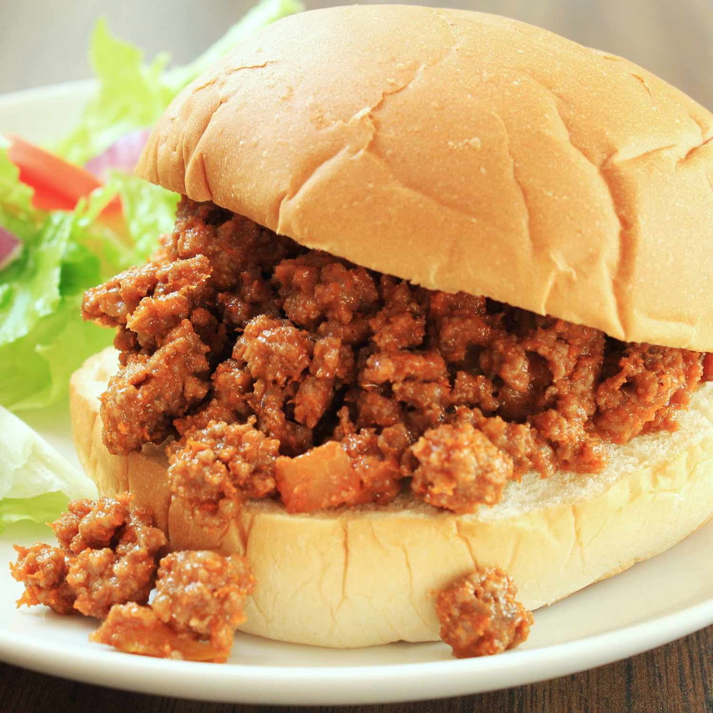

Sloppy Joes

These crowd-pleasing Sloppy Joe sandwiches will take you back to your childhood! This is my mom's recipe and it always gets compliments!
There's nothing quite like Sloppy Joes to satisfy your comfort food cravings. This crowd-pleasing Sloppy Joe recipe will make you nostalgic for simpler times.
Plus, it comes together quickly with ingredients you likely already have on hand.
Ingredients
- Ground beef
- Onion
- Green bell pepper
- Ketchup
- Brown sugar
- Yellow mustard
- Garlic powder
- Sal
- Pepper
- Hamburger buns
Steps
- Cook the beef, onion, and green pepper.
- Drain the liquids, then stir in the remaining ingredients.
- Simmer for about 30 minutes. Serve on hamburgers buns.